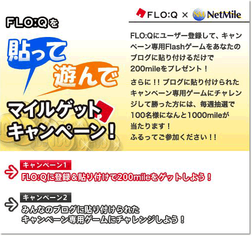

|
2007年12月11日
株式会社ネットマイル
ネットマイル社、ソニーのウィジェットサービス「FLO:Q（フローク）」と連携し、
会員向けオリジナルブログパーツの提供を開始！
インターネット上の共通ポイントプログラムを運営する株式会社ネットマイル（本社：東京都千代田区、代表取締役社長：山本雅 以下、ネットマイル社）は、ソニー株式会社（以下 ソニー社）の提供するウィジェットサービス“FLO:Q （フローク）”と連携し、本日2007年12月11日（火）よりオリジナルのブログウィジェット（ブログパーツ）の提供を開始いたしました。
“FLO:Q”は、「Find（見付ける）･Share（共有する）・Communicate（つながる）」をコンセプトとし、ブログやパソコンと連携したアプリケーション「ウィジェット」（パーツ）をユーザーに無料で提供するソニー社のサービスです。
今回の連携により、“FLO:Q”דNetMile”両ブランドがコラボレートした、オリジナルのブログウィジェットを作成、本日より公開いたしました。
また、新たなビジネスへの取り組みとして、オリジナルブログウィジェットの利用促進を軸としたキャンペーンを実施し、“FLO:Q”ウィジェットの認知・浸透と、ネットマイル会員の新規獲得・活性化を同時に展開してまいります。“FLO:Q”およびネットマイル社では、今後も継続的に双方のユーザー拡大を目指してまいります。
■「FLO:Qを 貼って 遊んで マイルゲットキャンペーン！」ページ

■「FLO:Qを 貼って 遊んで マイルゲットキャンペーン！」概要
| 名称 |
（1）「あなたのブログに貼り付けてマイルGet!!」キャンペーン |
（2）「遊んでマイルGET!!」キャンペーン |
| 内容 |
キャンペーン期間中にソニー社「“FLO:Q”ブログウィジェット」ページより会員登録をされ、さらにご自身のブログに今回提供するオリジナルブログウィジェットを貼り付けされた方に、もれなく200mileをプレゼントいたします。 |
キャンペーン期間中に、今回提供するオリジナルブログウィジェットが貼ってあるブログからゲームに参加・クリアされた方を対象に、毎週抽選で100名の方に1,000mileをプレゼントいたします。 |
| 期間 |
2007年12月11日（火）～2008年3月3日（月） |
| 備考 |
※(1)「あなたのブログに貼り付けてマイルGet!!」キャンペーンについて：
- ネットマイル非会員の方も、会員登録後すぐにキャンペーンへの参加が可能です。
- ブログ貼付の際、トラックバックの設定をしていただくと、ネットマイル社“FLO:Q”特集ページにてカテゴリ紹介されます。ご自身のブログをより多くの方に知っていただくツールとして活用いただけます。
カテゴリ：インターネット・コンピュータ、エンターテイメント、日記・雑談・恋愛、
ファッション・ビューティー、スポーツ・アウトドア・車、グルメ・趣味、
生活・子育て・ペット、社会・経済・投資、その他
※(2)「遊んでマイルGET!!」キャンペーンについて：
- ネットマイル非会員の方も、会員登録後すぐにキャンペーンへの参加が可能です。
- 期間中、毎週火曜0：00から翌月曜23：59の応募を一週間として集計、抽選を行います（計12回）。
- キャンペーンへの応募は、お一人様１日1回可能です。
|
|
【「“FLO:Q”ブログウィジェット」キャンペーンURL】
http://blog.floq.jp/support/help/floq/netmilecam.html
【“FLO:Q”について】
http://floq.jp/
ソニー社が提供するウィジェット（ウェブ上のコンテンツをブログ、デスクトップ上に直接表示・再生させるアプリケーション）サービス。“FLO:Q”ではこれまでのウィジェットを進化させ、自分で撮った写真や動画、さらにはお気に入りのニュースサイトやポッドキャスト番組のRSS情報などを自由に貼付・常駐させることが出来る。ブログウィジェットユーザー登録数は約5万名。
【株式会社ネットマイルについて】
http://www.netmile.co.jp/
2000年11月設立。三井物産株式会社の連結子会社で、同社のIT事業戦略の一端を担う。インターネット上の共通ポイントプログラム「ネットマイル」を2001年4月にサービス開始。「ネットマイル」は、加盟サイト数970社、会員口座数371万口座（2007年11月末現在）の規模であり、日本最大級のインターネット上の共通ポイントプログラム。
※“FLO:Q（フローク）”はソニー株式会社の商標です。
＜当リリースに関する報道関係者お問い合わせ先＞
株式会社ネットマイル 広報担当：江澤・村井
Email ： 
TEL ： 
|